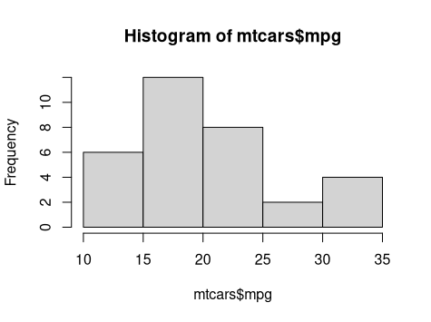
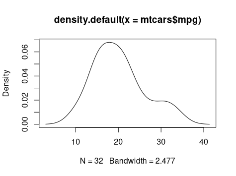
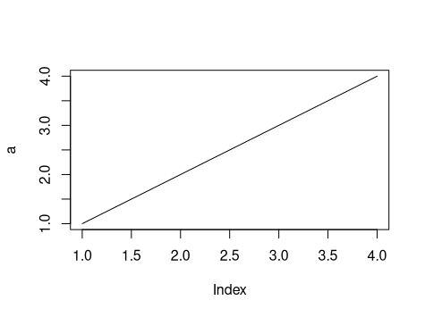
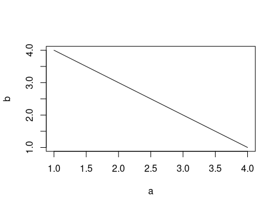

<img src="images/R4DS-cover.png" style="float: right; max-width: auto; height: 600px;"/> ## ITEC 4220 - Advanced Data Analytics ### Module 4 - R practice and linear algebra basics #### Anca Doloc-Mihu, Fall 2022 #### Reading: Through Data Visualization chapter <br/>on [Book's website](https://r4ds.had.co.nz/) or at [Safari Books/O'Reilly](https://learning.oreilly.com/library/view/r-for-data/9781491910382/titlepage01.html)
### Linear algebra basics: ### Vectors and matrices
### Basics: Vectors Vectors: `$ \vec{x} = [ 1, 2, 3 ]$` - Why? Most data comes in vectors - Can do bulk operations using math magic Some simple vector operations: <!-- .element: class="fragment" data-fragment-index="1" --> - <!-- .element: class="fragment" data-fragment-index="1" -->Adding or subtracting a scalar: `$$ \vec{x} + 1 = [ 2, 3, 4 ] $$` - <!-- .element: class="fragment" data-fragment-index="2" -->Multiplying or dividing by a scalar: `$$ \vec{x} \times 2 = [ 2, 4, 6 ] $$` - <!-- .element: class="fragment" data-fragment-index="3" -->Adding two vectors (of same size): `$$ \vec{x} + \vec{x} = [ 2, 4, 6 ] $$`
### Vector math - inner/[dot product](http://mathworld.wolfram.com/DotProduct.html): `$$ \vec{x} \cdot \vec{y} = \sum x_i y_i $$` - Calculates "length of projection" - Multiply corresponding elements and sum to result in scalar - Useful in calculating weighted sums, scaling data elements, etc. - <!-- .element: class="fragment" data-fragment-index="1" --> [outer product](https://en.wikipedia.org/wiki/Outer_product): `$$ \vec{x} \times \vec{y} = [x_i y_j]_{ij} $$` <!-- .element: class="fragment" data-fragment-index="1" --> - element-by-element multiplication, results in $ n \times m $ size matrix - useful when duplicating rows or columns, or scaling them
### Basics: Matrices `$$ A=\left[ \begin{array}{ccc} a_{11} & \cdots & a_{1n} \\ \vdots & \ddots & \vdots \\ a_{m1} & \cdots & a_{mn} \\ \end{array} \right] $$` Uses: - Aggregation of many vectors - Bases for transformation spaces - Image data and manipulation
#### Matrix multiplication Must have matching inner dimensions, results in a matrix: `$$ A_{m\times n} \times B_{n\times o} = C_{m\times o} $$` Each element of output matrix is the result of one _inner product_: `$$ c_{ij} = \sum_k a_{ik} b_{kj} $$` Rows of $A$ matched to columns of $B$ to create single elements of $C$: `$$ \left[ \begin{array}{c} \bbox[5px,border:2px solid red]{\begin{array}{ccc} a_{11} & \cdots & a_{1n} \\ \end{array}}\\ \begin{array}{ccc} \vdots & \ddots & \vdots \\ a_{m1} & \cdots & a_{mn} \\ \end{array} \end{array} \right] \times \left[ \begin{array}{cc} \bbox[5px,border:2px solid red]{\begin{array}{c} b_{11} \\ \vdots \\ b_{n1} \end{array}} & \begin{array}{cc} \cdots & b_{1o} \\ \ddots & \vdots \\ \cdots & b_{no} \\ \end{array} \end{array} \right] = \left[ \begin{array}{ccc} \bbox[5px,border:2px solid red]{c_{11}} & \cdots & c_{1o} \\ \vdots & \ddots & \vdots \\ c_{m1} & \cdots & c_{mo} \\ \end{array} \right] $$` Useful transforming rows of data, image operations, 3D rotations, machine learning, etc.
### R: conventional looping versus vector operations Loop through your data and calculate mean and standard deviation (or regression, min, max, etc.). ```R vector <- c(1,2,3) sum <- 0 for (element in vector) { sum <- sum + element } mean <- sum / length(vector) ``` Use vector operations to do it shorter and more efficiently. <!-- .element: class="fragment" data-fragment-index="1" --> `\[ \mu = \sum_{i=1..N} x_i / N \]` ```R vector <- c(1,2,3) sum(vector) / length(vector) ``` <!-- .element: class="fragment" data-fragment-index="1" -->
### R exercise Calculate standard deviation `\[ \sigma = \sqrt{ \sum_{i=1..N} ( x_i - \mu )^2 / ( N - 1 ) } \]` where `$N$` is the number of elements in `$ \vec{x} $` and `$ \mu $` is its mean.
<img src="images/R4DS-cover.png" style="float: right; max-width: auto; height: 600px;"/> ### Data exploration and manipulation in R <img src="images/R4DS-fig-1.2-R-transform-visualize.png" style="max-width: auto; height: 300px;"/> Familiar data science workflow for R: - **Tidying** puts your data in the right format - **Transforming** is querying, filtering, and recalculating - **Visualizing** follows to inspect the results - (**Modeling** will be explained later)
#### Prerequisites - Very useful set of packages in _tidyverse_ ```R library(tidyverse) #> ── Attaching packages ─────────────────────────────────────── tidyverse 1.3.0 ── #> ✔ ggplot2 3.3.0 ✔ purrr 0.3.4 #> ✔ tibble 3.0.1 ✔ dplyr 0.8.5 #> ✔ tidyr 1.0.3 ✔ stringr 1.4.0 #> ✔ readr 1.3.1 ✔ forcats 0.5.0 #> ── Conflicts ────────────────────────────────────────── tidyverse_conflicts() ── #> ✖ dplyr::filter() masks stats::filter() #> ✖ dplyr::lag() masks stats::lag() ``` - Install if not available: ```R install.packages("tidyverse") ```
#### Some useful commands - `ggplot()`: an advanced plotting system (part I, Data Visualisation chapter) - `select()`: subset columns - `filter()`: subset rows on conditions - `mutate()`: create new columns by using information from other columns - `group_by()` and `summarize()`: create summary statistics on grouped data - `arrange()`: sort results - `count()`: count discrete values Reference: [R for Social Scientists: Introducing dplyr and tidyr](https://datacarpentry.org/r-socialsci/03-dplyr-tidyr/index.html)
#### Selecting columns and filtering rows Keeps only the columns you want: ```R select(dataframe, col1, col2, ...) ``` Keep rows based on condition: ```R filter(dataframe, col1 == "value") ```
#### Piping data As data is tidied and transformed, it needs to be saved: ```R df1 <- read.csv(...) df2 <- select(df1, col1); ``` Or it can be nested: ```R df2 <- select(read.csv(...), col1); ``` R has piping: ```R df <- read.csv(...) %>% select(col1) ```
#### Adding new columns and grouping Adding a derived column to an existing dataframe is useful: ```R df2 <- df1 %>% mutate(new_column = col1 / col2) ``` Grouping and summarizing can be achieved by: ```R df1 %>% group_by(col1) %>% summarise(new_column = mean(col2)) ``` Instead of `mean()`, you can choose any of vector operations that would operate on the subset data grouped by `col1`.
### Plotting in R - Line plots, XY lines - Bar plots, histograms - Image plots/heatmaps - Specialized graphs: Boxplots [Examples and code](https://www.statmethods.net/graphs/index.html)
#### Investigating data distribution: histogram and density plots   1. Histogram (left): Quick distribution graph, but dependent on bin size ```R hist(mtcars$mpg, breaks=5) ``` 1. Density (right): Less common, but bin independent ```R plot(density(mtcars$mpg)) ```
#### Simple line plots   - 1-D line (left): Just one variable, x-axis is index ```R a=c(1,2,3,4) plot(a,type="l") ``` - 2-D line or X-Y plot (right): 2 variables ```R b=c(4,3,2,1) plot(a,b, type="l") ```
### Statistics refresher: Hypothesis Testing Statistical hypothesis - testable by model of random variables: - Hypothesis for statistical relationship between two datasets - Compared to idealized *null hypothesis* that says no relationship - Comparison is *statistically significant* if null hypothesis can be rejected - Threshold of rejection certainty indicate *significance level* of test [Wikipedia](https://en.wikipedia.org/wiki/Statistical_hypothesis_testing)
### Testing Process - State initial hypothesis whose truth is unknown <br> (e.g. are two distributions different?) - Null hypothesis will oppose the hypothesis <br> (e.g., distributions are equal) - Investigate assumptions <br> (e.g., statistical independence, normal distribution, etc.) - Choose appropriate statistical test - Select a significance level ($\alpha$), the probability level under which the null hypothesis will be rejected (e.g., 1% or 5%) - Compute observed value of statistic, or directly the $p$-value - Decide whether to reject null hypothesis in favor of the *alternative* hypothesis
### Example: Human Sex Ratio > whether male and female births are equally likely (null hypothesis) - Birth records in London between 1629-1710 - Applied "sign test" - Every year more men born than women - Male and female births likely with $p=0.5^{82}=1/4\times10^{-18}$ - Can't be due to chance!
### Common statistical tests in R - **One-sample t-test**: Check is a normal distribution has a specific mean `t.test(data, mean)` - usually used to see if subtraction of two distributions have a non-zero mean - **Wilcoxon signed rank test**: Similar to above, but when distribution is not normal, e.g. this is a *non-parametric test*. <br> `wilcox.test(data, mu=mean, conf.int = TRUE)` - **Two-sample t-test** and **Wilcoxon Rank Sum Test**: Test means of two distributions. Latter is non-parameteric. <br> `t.test(data1, y = data2)` <br> `wilcox.test(data1, data2, alternative = "g")` [from R-Statistics.co](http://r-statistics.co/Statistical-Tests-in-R.html)
### Common statistical tests in R (cont'd) - **Shapiro test**: If data follows normal distribution. <br> `shapiro.test(data)` - **Kolmogorov and Smirnov**: Non-parametric test; if 2 samples follow same distribution. <br> `ks.test(data1, data2)` - **Fisher's F-test**: Checks for equal variance in two distributions <br> `var.test(data1, data2)` - **Chi Squared Test**: Whether two categorical variables are dependent. <br> `chisq.test(table(cat1, cat2), correct = FALSE)` - **Correlation**: Linear relationship of two continuous variables `cor.test(data1, data2)`
< Home